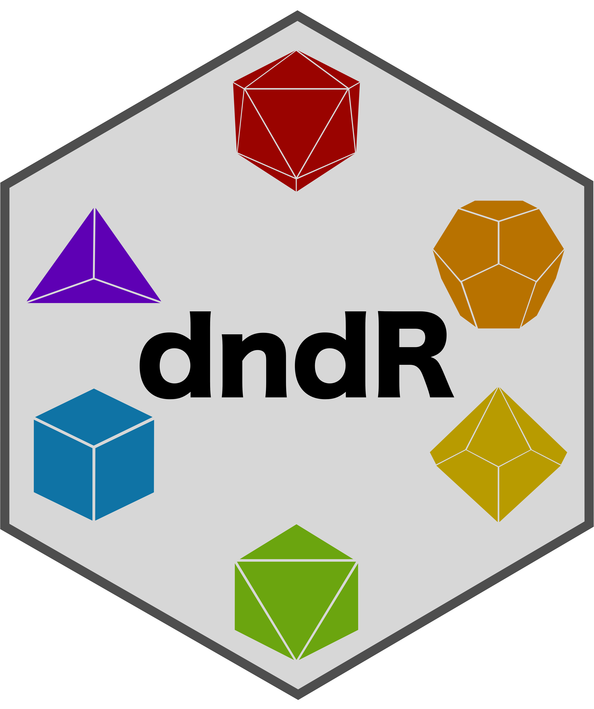
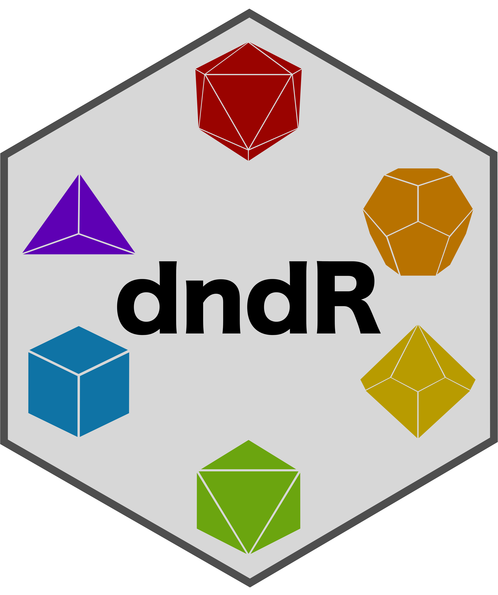
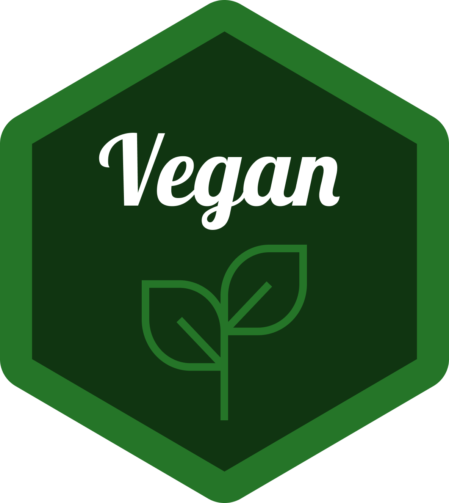
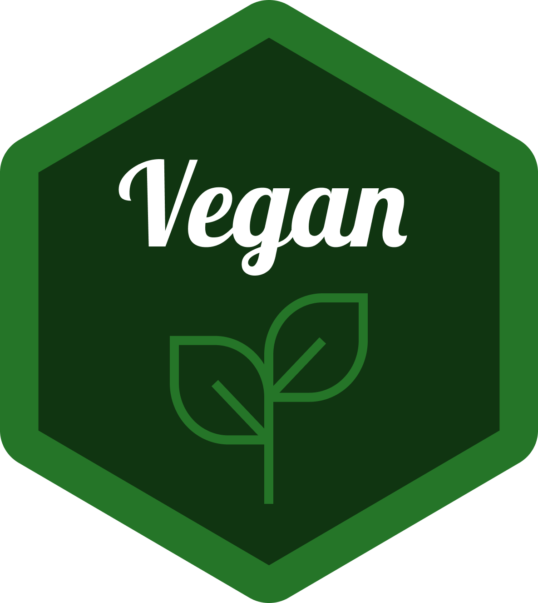

Intro to Data Science
Temperature Check
How are you Feeling?

Nick’s Recommended Packages
 
 
stringr – Simple, Consistent Wrappers for Common String Operations
dndR – Dungeons & Dragons Functions for Players and Dungeon Masters
lterpalettefinder – Extract Color Palettes from Photos and Pick Official LTER Palettes
 

supportR – Support Functions for Wrangling and Visualization
vegan – Community Ecology Package
Forbidden Packages (Sorry!)


dplyr– A Grammar of Data Manipulation- Reason: we cover a lot of this in class
tidyr– Tidy Messy Data- Actually only 2 forbidden functions:
pivot_longer&pivot_wider - Others are okay to use!
- Reason: we just covered both in class
- Actually only 2 forbidden functions:
ggplot2– Create Elegant Data Visualizations Using the Grammar of Graphics- Reason: we cover a lot of this in class (see week 6) and its functions use a really different syntax from what is used by other packages
Temperature Check
How are you Feeling?
Reshaping Longer Visual

Practice: pivot_longer
- Download the “bees.csv” and load it into R with
read.csv- Check its structure! What columns are there?
- Pivot the data so that you are left with three columns:
- “year”, “bee_group”, and “bee_abundance”
- Check your work! What are the dimensions of the resulting dataframe?
- Should be 32 rows by 3 columns
Reshaping Wider Visual

Practice: pivot_wider
- Take the data object you pivoted to long format in the prior practice block
- Pivot it back to wide format with
pivot_wider!
- Check your work!
- Does it look like the original object you loaded with
read.csv?
- Does it look like the original object you loaded with
Practice: Wrangling!
- Beginning with the “penguins” data do the following operations:
- Keep only data on female penguins
- No male penguins and no individuals where sex is not known
- Calculate average bill depth within species and island
- Reshape to wide format so that each island is a column
- Note that if an island doesn’t have a given species it should have
NA(not0)
- Note that if an island doesn’t have a given species it should have
- Check your work! What are the dimensions of the resulting dataframe?
- Should be 6 rows by 5 columns